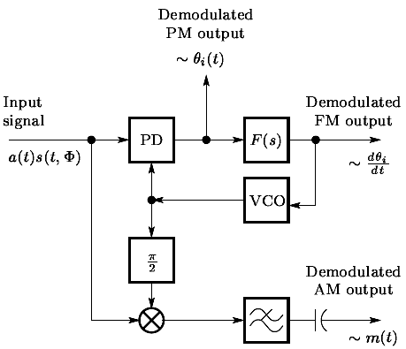

Instructions for Phase Modulation (PM)
- Step 1: Click on 'Generate Message' button to generate input message signal
- Step 2: Then click on 'Generate Carrier' button to generate carrier signal
- Step 3: The carrier frequency has to be more than the message frequency and You can change frequencies using sliders
- Step 4: Click on 'Generate Phase Modulated Signal' button to generate Phase Modulated Signal
- Step 5: Click on the 'Show Frequency Spectrums of PM' button to see spectrums of the PM signal
- Here, β represents the modulation index. The frequency spectrum is shown for a modulation index of 1
CH1-A
CH2-A
AUDIO OSCILLATOR
SYNC
cos(wt)
TTL
sin(μt)
PHASE SHIFTER
DC
GND
B
GA+gB
ADDER
G:
1
A
g:
1
B
GA+gB
Master Signals
100KHz sin
100KHz cos
100KHz TTL
sample TTL
message sin
Multiplier
X
Message Frequency (Hz)
Carrier Frequency (Hz)
50
Kp:
2
β =
Instructions for Phase Demodulation
- Step 1: You can Demodulate the PM Signal clicking on the 'Perform phase Demodulation' button
- Step 2: Click on the 'Show Frequency Spectrums of Original and Demodulated Signal' button to see spectrums of the message and demodulated signal
